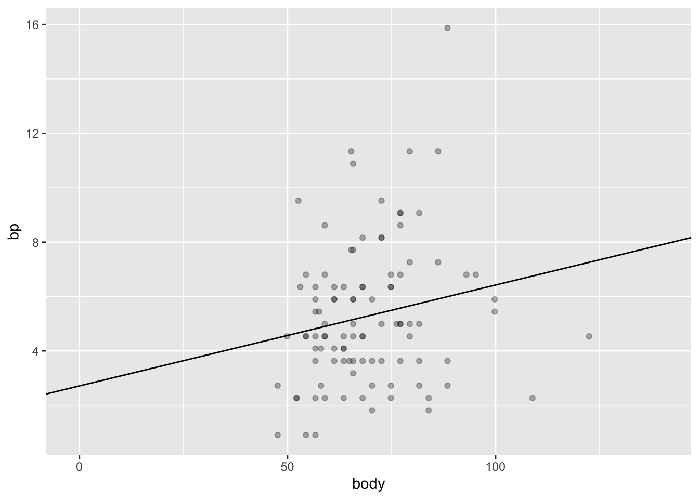
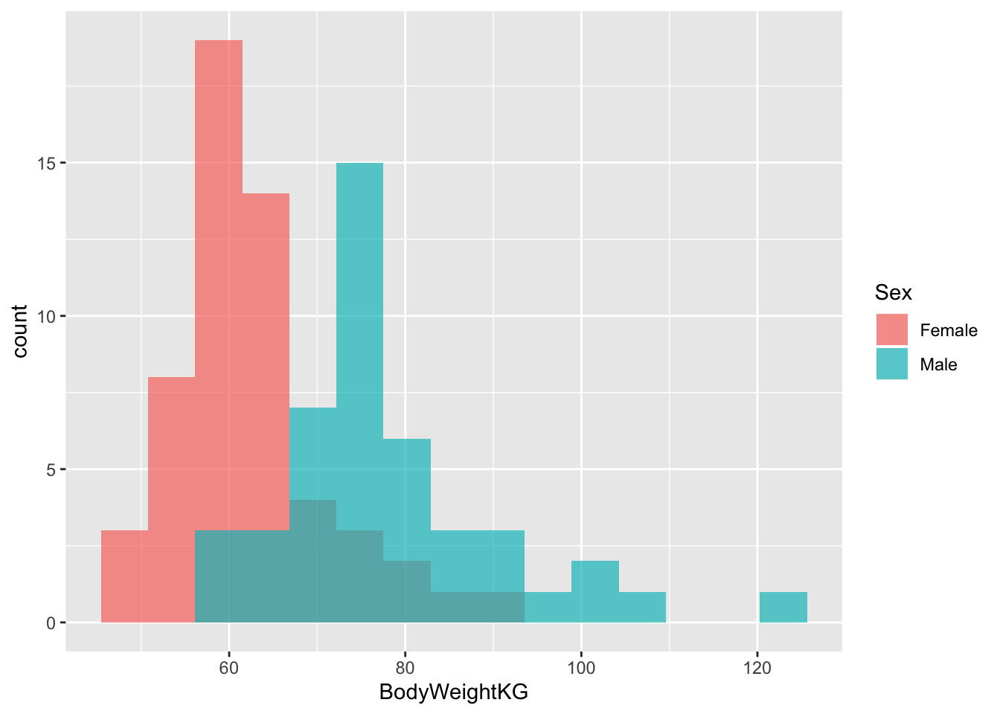
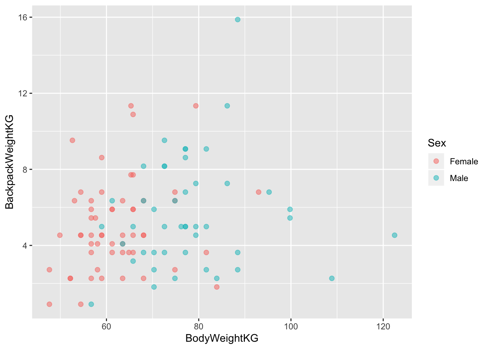
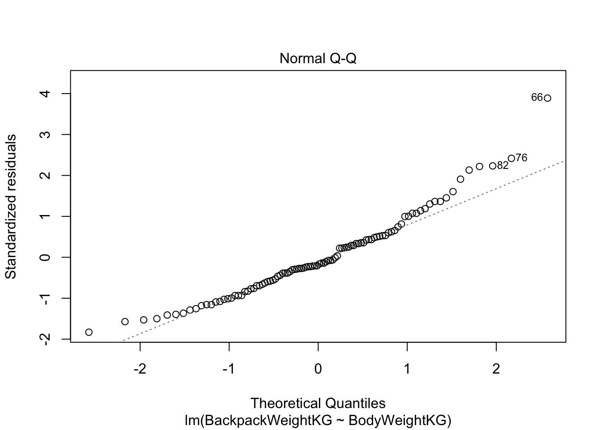
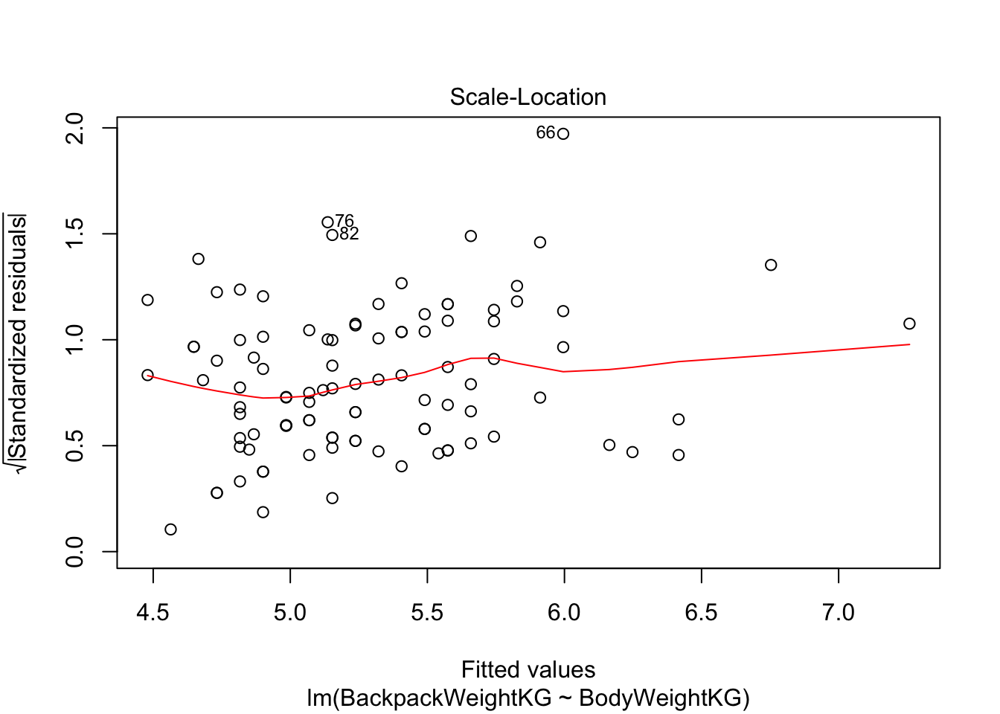
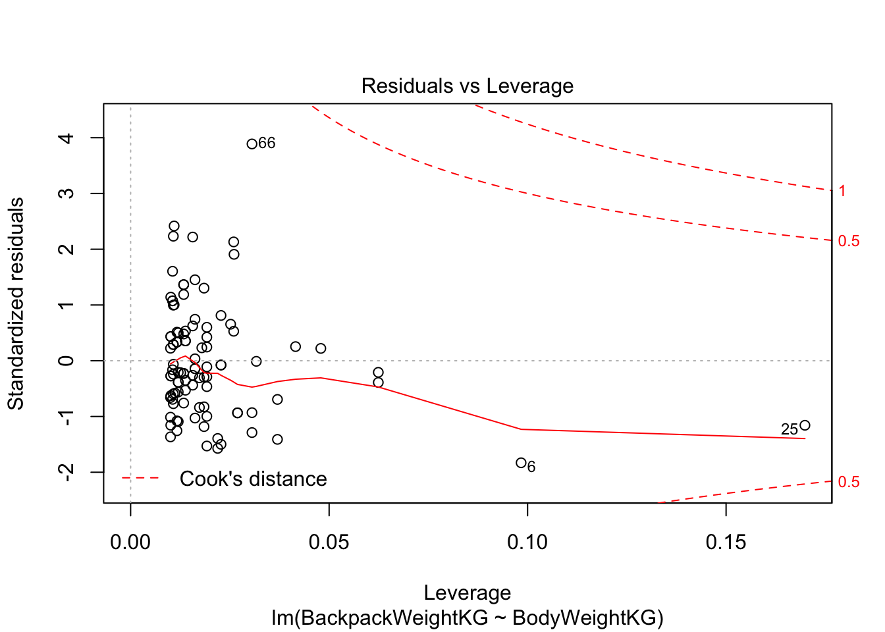
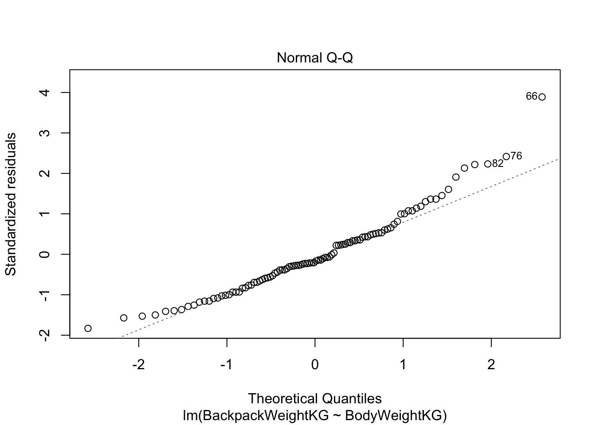
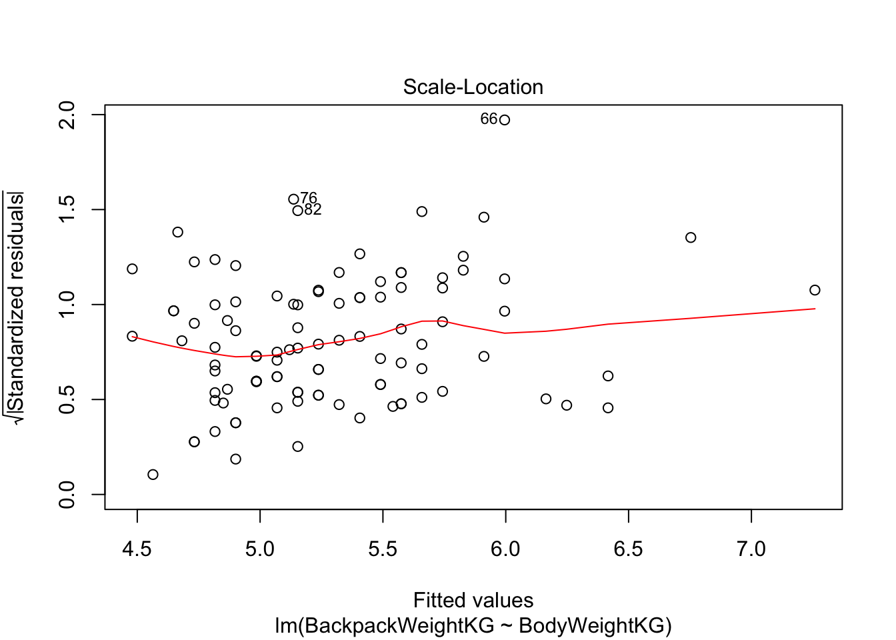
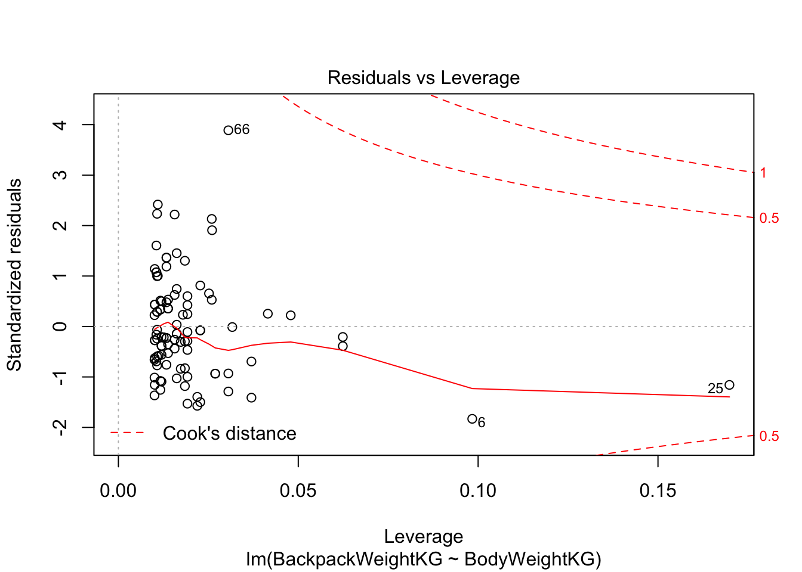
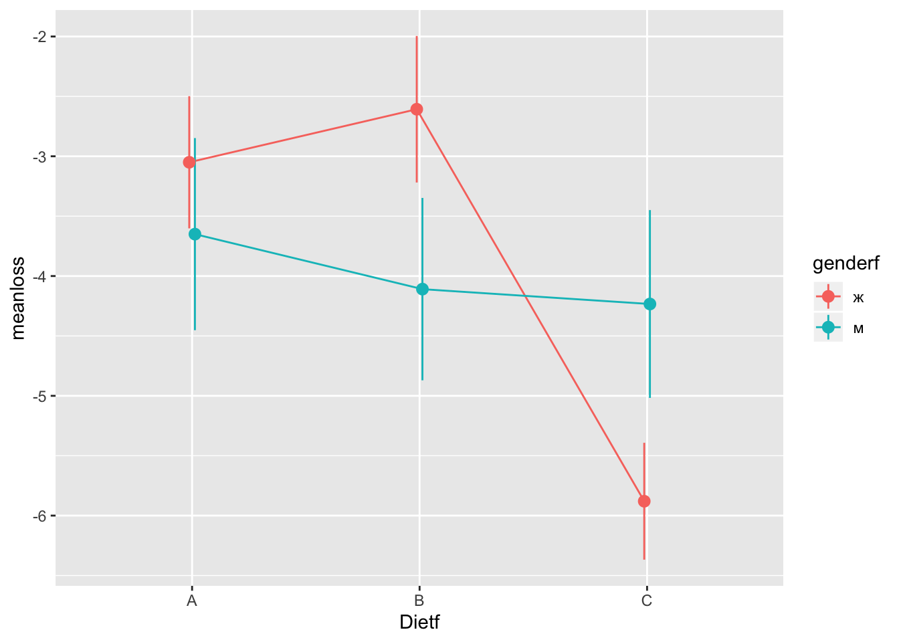

2 Неделя 2, День 1
2.1 Warmup exercise
Итак, давайте загрузим датасет про студентов и вес их рюкзаков и сконвертируем его в data.table:
install.packages("Stat2Data")library(Stat2Data)
library(data.table)## data.table 1.12.8 using 2 threads (see ?getDTthreads). Latest news: r-datatable.comdata("Backpack")
back <- as.data.table(Backpack)Самостоятельное задание:
- Исследуйте колонки BackpackWeight и BodyWeight. В чем измеряются эти переменные? Переведите их в килограммы, создав колонки BackpackWeightKG, BodyWeightKG.
back[, summary(BackpackWeight)]## Min. 1st Qu. Median Mean 3rd Qu. Max.
## 2.00 8.00 11.00 11.66 14.25 35.00back[, summary(BodyWeight)]## Min. 1st Qu. Median Mean 3rd Qu. Max.
## 105.0 130.0 147.5 153.1 170.0 270.0back[,BackpackWeightKG:= 0.45359237*BackpackWeight]
back[,BodyWeightKG:= 0.45359237*BodyWeight]- Присвойте id каждому испытуемому.
back[,id:=1:.N]- Как различается вес рюкзака в зависимости от пола? Кто весит больше? Если допустить, что выборка репрезентативна, то можно ли сделать вывод о различии по среднему весу в генеральной совокупности?
back[,mean(BackpackWeightKG), by = Sex]## Sex V1
## 1: Female 5.006010
## 2: Male 5.634625back[,t.test(BackpackWeightKG ~ Sex)]##
## Welch Two Sample t-test
##
## data: BackpackWeightKG by Sex
## t = -1.1782, df = 86.25, p-value = 0.242
## alternative hypothesis: true difference in means is not equal to 0
## 95 percent confidence interval:
## -1.6892365 0.4320067
## sample estimates:
## mean in group Female mean in group Male
## 5.006010 5.634625- Повторите пункт 3 для веса самих студентов.
back[,mean(BodyWeightKG), by = Sex]## Sex V1
## 1: Female 62.28236
## 2: Male 78.14893back[,t.test(BodyWeightKG ~ Sex)]##
## Welch Two Sample t-test
##
## data: BodyWeightKG by Sex
## t = -7.0863, df = 77.002, p-value = 5.704e-10
## alternative hypothesis: true difference in means is not equal to 0
## 95 percent confidence interval:
## -20.32511 -11.40803
## sample estimates:
## mean in group Female mean in group Male
## 62.28236 78.14893- Визуализируйте распределение этих двух переменных в зависимости от пола (используя ggplot2)
library(ggplot2)
ggplot(back)+
geom_histogram(aes(x = BodyWeightKG, fill = Sex), bins = 15, position = "identity", alpha = 0.7)
ggplot(back)+
geom_histogram(aes(x = BackpackWeightKG, fill = Sex), bins = 12, position = "identity", alpha = 0.7)
- Теперь исследуем взаимосвязь переменных. Посчитайте коэффициент корреляции Пирсона и Спирмена.
back[, cor.test(BodyWeightKG, BackpackWeightKG)]##
## Pearson's product-moment correlation
##
## data: BodyWeightKG and BackpackWeightKG
## t = 1.9088, df = 98, p-value = 0.05921
## alternative hypothesis: true correlation is not equal to 0
## 95 percent confidence interval:
## -0.007360697 0.371918344
## sample estimates:
## cor
## 0.1893312back[, cor.test(BodyWeightKG, BackpackWeightKG, method = "spearman")]## Warning in cor.test.default(BodyWeightKG, BackpackWeightKG, method =
## "spearman"): Cannot compute exact p-value with ties##
## Spearman's rank correlation rho
##
## data: BodyWeightKG and BackpackWeightKG
## S = 131520, p-value = 0.03527
## alternative hypothesis: true rho is not equal to 0
## sample estimates:
## rho
## 0.2108001- Постройте диаграмму рассеяния с помощью ggplot2. Цветом закодируйте пол респондента.
ggplot(back, aes(x = BodyWeightKG, y = BackpackWeightKG))+
geom_point(aes(colour = Sex), alpha = 0.5, size = 2)
2.2 Простая линейная регрессия
Вы уже умеете считать коэффициент корреляции Пирсона:
back[,cor.test(BackpackWeightKG, BodyWeightKG)]##
## Pearson's product-moment correlation
##
## data: BackpackWeightKG and BodyWeightKG
## t = 1.9088, df = 98, p-value = 0.05921
## alternative hypothesis: true correlation is not equal to 0
## 95 percent confidence interval:
## -0.007360697 0.371918344
## sample estimates:
## cor
## 0.1893312Простая линейная регрессия - это примерно то же самое. В синтаксисе линейной регрессии уже не обойтись без формул, это такой специальный тип данных в R:
class(y ~ x)## [1] "formula"Если видите эту волнистую линию - тильду, это, что значит перед Вами формула.
Давайте исследуем зависимость размера рюкзака от массы тела. В простой лингейной регрессии, в отличие от корреляции, есть направленность: одна переменная является как бы независимой переменной (предиктором), другая - как бы объясняемой переменной (outcome). В формуле предикторы находятся справа от тильды, а объясняемая переменная - слева.
Терминология линейной регрессии может немного запутать: если одна переменная предиктор, а другая объясняется этим предиктором, то кажется, что они должны быть обязательно связаны причинно-следственной связью. Это не так: обозначения условны, более того, Вы можете поменять переменные местами и ничего не изменится! Короче говоря, “линейная регрессия” не дает никакой магической каузальной силы переменным.
2.2.1 Функция lm()
Давайте посчитаем линейную регрессию функцией lm().
model <- lm(BackpackWeightKG ~ BodyWeightKG, data = back)
model##
## Call:
## lm(formula = BackpackWeightKG ~ BodyWeightKG, data = back)
##
## Coefficients:
## (Intercept) BodyWeightKG
## 2.71125 0.03713summary(model)##
## Call:
## lm(formula = BackpackWeightKG ~ BodyWeightKG, data = back)
##
## Residuals:
## Min 1Q Median 3Q Max
## -4.4853 -1.7629 -0.4681 1.2893 9.8803
##
## Coefficients:
## Estimate Std. Error t value Pr(>|t|)
## (Intercept) 2.71125 1.37483 1.972 0.0514 .
## BodyWeightKG 0.03713 0.01945 1.909 0.0592 .
## ---
## Signif. codes: 0 '***' 0.001 '**' 0.01 '*' 0.05 '.' 0.1 ' ' 1
##
## Residual standard error: 2.581 on 98 degrees of freedom
## Multiple R-squared: 0.03585, Adjusted R-squared: 0.02601
## F-statistic: 3.644 on 1 and 98 DF, p-value: 0.05921print(model) или просто model выводит коэфициенты линейной регрессии - это коэффициенты прямой, которая лучше всего подогнанна к данным. Как измеряется качество этой подгонки? В расстоянии точек исходных точек до прямой. По идее, расстояние до прямой нужно было бы считать просто по модулю. И так делают, хоть и очень редко. Обычно в линейной регрессии используются квадратичные расстояния точек до прямой для оценки расстояния (метод наименьших квадратов - ordinary least squares). Это дает кучу клевых математических свойств, например, возможность легко аналитически найти коэффициенты прямой линейной регрессии.
back[, body := BodyWeightKG]
back[, bp := BackpackWeightKG]
library(ggplot2)
ggplot(data = back,aes(x = body, y = bp))+
geom_point(alpha = 0.3)+
geom_abline(slope = 0.03713, intercept = 2.71125)+
coord_cartesian(xlim = c(-1, 140))Функция predict() позволяет скормить модели новые данные и получить предсказания для новых значений предикторов. Попробуем поиграть с этим немного. Допустим, предскажем вес рюкзака для студента весом в 100 кг:
predict(model, newdata = data.frame(BodyWeightKG = 100))## 1
## 6.424229Мы можем даже попробовать какие-нибудь экстремальные значения для предикторов. Например, сколько будет весить рюкзак студента весом 1000 кг?
predict(model, newdata = data.frame(BodyWeightKG = 1000))## 1
## 39.841Очевидно, что в этом не очень много смысла: студент весом 1000 кг не сможет ходить на занятия, поэтому и про вес рюкзака как-то не имеет смысл спрашивать. Это проблема экстрополяции: линейная регрессия позволяет более-менее достоверно предсказывать значения внутри диапазона значений, на которых была построена модель. Еще один “странный” пример - студент весом 0 кг.
predict(model, newdata = data.frame(BodyWeightKG = 0))## 1
## 2.711255Здесь бессмысленность происходящего еще очевиднее. Конечно, вес студента не может быть равен нулю, иначе это не студент вовсе. Однако это позволяет понять, что такое intercept модели - это значение зависимой переменой в случае, если предиктор равен нулю. А коэффициент предиктора означает, насколько килограммов увеличивается вес рюкзака при увеличении веса студента на 1 кг: на 0.0371297. Не очень много!
2.2.2 Интерпретация вывода линейной регрессии
Давайте еще раз посмотрим на summary(model):
summary(model)##
## Call:
## lm(formula = BackpackWeightKG ~ BodyWeightKG, data = back)
##
## Residuals:
## Min 1Q Median 3Q Max
## -4.4853 -1.7629 -0.4681 1.2893 9.8803
##
## Coefficients:
## Estimate Std. Error t value Pr(>|t|)
## (Intercept) 2.71125 1.37483 1.972 0.0514 .
## BodyWeightKG 0.03713 0.01945 1.909 0.0592 .
## ---
## Signif. codes: 0 '***' 0.001 '**' 0.01 '*' 0.05 '.' 0.1 ' ' 1
##
## Residual standard error: 2.581 on 98 degrees of freedom
## Multiple R-squared: 0.03585, Adjusted R-squared: 0.02601
## F-statistic: 3.644 on 1 and 98 DF, p-value: 0.05921Теперь мы понимаем, что это за коэффициенты. Однако это всего лишь их оценка. Это значит, что мы допускаем, что в реальности есть некие настоящие коэффициенты линейной регрессии, а каждый раз собирая новые данные, они будут посчитаны как немного разные. Короче говоря, эти коэффициенты - те же статистики, со своим выборочным распределением и стандартными ошибками. На основе чего и высчитывается p-value для каждого коэффициента - вероятность получить такой и более отклоняющийся от нуля коэффициент при верности нулевой гипотезы - независимости зависимой переменной от предиктора.
Кроме p-value, у линейной регрессии есть R2 - доля объясненной дисперсии. Как ее посчитать? Для начала давайте сохраним как отдельные колонки ошибки (необъясненную часть модели) и предсказанные значения (они означают объясненную часть модели). Можно убедиться, что сумма предсказанных значений и ошибок будет равна зависимой переменной.
model$residuals## 1 2 3 4 5 6
## -0.73414413 -2.36666022 -0.19634292 -2.60017426 -2.11403371 -4.48531686
## 7 8 9 10 11 12
## -1.94561603 -4.01261202 -2.63272245 -3.82508188 -1.35615417 4.11950245
## 13 14 15 16 17 18
## -0.58483892 -0.58483892 0.62663298 -0.66904776 0.74339000 -1.75808589
## 19 20 21 22 23 24
## -0.28055176 -3.22218430 3.49749241 1.66855186 -0.16379474 0.64006870
## 25 26 27 28 29 30
## -2.72260803 2.75872534 -1.60878068 -2.80114012 5.42861891 -2.76859193
## 31 32 33 34 35 36
## -0.61738711 2.07161893 -0.90256180 -1.97816422 0.86014703 2.55775948
## 37 38 39 40 41 42
## 1.28119121 -0.41642125 -3.50735900 -1.49088831 -1.52457185 0.91180768
## 43 44 45 46 47 48
## -0.36476060 1.31373940 -0.53317827 -2.38009594 -2.14544654 -2.96955779
## 49 50 51 52 53 54
## -0.51974255 -0.70159594 3.04390004 -1.69298952 4.86054022 1.34628758
## 55 56 57 58 59 60
## 0.74339000 2.57460125 -0.36476060 -3.55901965 -0.98677064 1.08022535
## 61 62 63 64 65 66
## -1.12264013 -0.70159594 -0.75325660 -1.44036301 -0.97333492 9.88033377
## 67 68 69 70 71 72
## 0.59294945 1.11277354 -3.90929072 -2.54851361 -3.02121845 3.32907473
## 73 74 75 76 77 78
## 1.11277354 1.53381772 -1.77719836 6.20334021 -3.57245537 -1.18773650
## 79 80 81 82 83 84
## 1.90320125 -0.19634292 5.68124542 5.73290607 -2.38009594 -0.02792525
## 85 86 87 88 89 90
## 3.71757073 0.91180768 -0.78466943 1.36540005 3.49749241 1.59891409
## 91 92 93 94 95 96
## 2.92714302 2.75872534 -0.55115539 0.57497233 0.55585986 0.86014703
## 97 98 99 100
## -3.27384496 0.08883177 -0.98677064 1.22953056back$residuals = residuals(model)
back$fitted = fitted(model)
back[, bp - (fitted + residuals)]## [1] 0.000000e+00 -4.440892e-16 0.000000e+00 -4.440892e-16 4.440892e-16
## [6] -4.440892e-16 -4.440892e-16 2.220446e-16 0.000000e+00 1.110223e-16
## [11] -4.440892e-16 0.000000e+00 0.000000e+00 0.000000e+00 0.000000e+00
## [16] 0.000000e+00 0.000000e+00 0.000000e+00 0.000000e+00 0.000000e+00
## [21] 0.000000e+00 0.000000e+00 0.000000e+00 0.000000e+00 0.000000e+00
## [26] 0.000000e+00 4.440892e-16 4.440892e-16 0.000000e+00 0.000000e+00
## [31] 0.000000e+00 0.000000e+00 0.000000e+00 -4.440892e-16 -8.881784e-16
## [36] 0.000000e+00 0.000000e+00 0.000000e+00 -2.220446e-16 -4.440892e-16
## [41] -4.440892e-16 0.000000e+00 0.000000e+00 0.000000e+00 0.000000e+00
## [46] 0.000000e+00 4.440892e-16 0.000000e+00 0.000000e+00 0.000000e+00
## [51] 0.000000e+00 -4.440892e-16 0.000000e+00 0.000000e+00 0.000000e+00
## [56] 0.000000e+00 0.000000e+00 -4.440892e-16 0.000000e+00 0.000000e+00
## [61] -8.881784e-16 0.000000e+00 0.000000e+00 -4.440892e-16 0.000000e+00
## [66] 0.000000e+00 0.000000e+00 0.000000e+00 -3.330669e-16 0.000000e+00
## [71] 4.440892e-16 0.000000e+00 0.000000e+00 0.000000e+00 0.000000e+00
## [76] 0.000000e+00 -3.330669e-16 4.440892e-16 0.000000e+00 0.000000e+00
## [81] 0.000000e+00 0.000000e+00 0.000000e+00 0.000000e+00 0.000000e+00
## [86] 0.000000e+00 0.000000e+00 -8.881784e-16 0.000000e+00 -8.881784e-16
## [91] 0.000000e+00 0.000000e+00 0.000000e+00 0.000000e+00 0.000000e+00
## [96] -8.881784e-16 0.000000e+00 0.000000e+00 0.000000e+00 0.000000e+00Соответственно, вся сумма объясненной дисперсии разделяется на объясненую и необъясненную. Полная дисперсия (total sum of squares = TSS) может быть посчитана как сумма квадратов разниц со средним. Необъясненная дисперсия - это сумма квадратов ошибок - residual sum of squares (RSS).
rss <- back[, sum(residuals^2)]
rss## [1] 652.7272tss <- back[, sum((bp - mean(bp))^2)]
tss## [1] 676.9951- rss/tss## [1] 0.03584628Это очень мало, мы объяснили всего 3.5846285% дисперсии. Собственно, и p-value больше, чем 0,05. При этом этот p-value тот же, что и при коэффициента корреляции Пирсона. А R2 - это квадрат коэффициента корреляции Пирсона, если речь идет только об одном предикторе.
summary(model)##
## Call:
## lm(formula = BackpackWeightKG ~ BodyWeightKG, data = back)
##
## Residuals:
## Min 1Q Median 3Q Max
## -4.4853 -1.7629 -0.4681 1.2893 9.8803
##
## Coefficients:
## Estimate Std. Error t value Pr(>|t|)
## (Intercept) 2.71125 1.37483 1.972 0.0514 .
## BodyWeightKG 0.03713 0.01945 1.909 0.0592 .
## ---
## Signif. codes: 0 '***' 0.001 '**' 0.01 '*' 0.05 '.' 0.1 ' ' 1
##
## Residual standard error: 2.581 on 98 degrees of freedom
## Multiple R-squared: 0.03585, Adjusted R-squared: 0.02601
## F-statistic: 3.644 on 1 and 98 DF, p-value: 0.05921cor.test(back$bp, back$body)$estimate^2## cor
## 0.035846282.2.3 Допущения линейной регрессии
Как и в случае с другими параметрическими методами, линейная регрессия имеет определенные допущения относительно используемых данных. Если они не соблюдаются, то все наши расчеты уровня значимости могут некорректными.
Очень важно ставить вопрос о том, насколько результаты будут некорректными. Как сильно нарушения допущений будет влиять на модель? Ответ на этот вопрос может быть контринтуитивен. Например, достаточно большие отклонения от нормальности нам обычно не стражны при условии того, что выборка достаточно большая.
Допущения линейной регрессии связаны с ошибками: они должны быть нормально распределены, а разброс ошибок должен не уменьшаться и не увеличиваться в зависимости от предсказанных значений. Это то, что называется гомоскедастичностью или гомогенностью (когда все хорошо) и гетероскедастичностью или гетерогенностью (когда все плохо).
Если мы применим функцию plot(), то получим 4 скаттерплота:
Зависимость ошибок от предсказанных значений. На что здесь смотреть? На симметричность относительно нижней и верхней части графика, на то, что разброс примерно одинаковый слева и справа.
Q-Q plot. Здесь все довольно просто: если ошибки являются выборкой из нормального распределения, то они выстраиваются в прямую линию. Если это мало похоже на прямую линию, то имеет место отклонение от нормальности.
Scale-Location plot. Этот график очень похож на график 1, только по оси у используются квадратные корни модуля ошибки. Еще один способ исследовать гетеро(гомо)скедастичность и находить выбросы.
Residuals-Leverage plot. Здесь по оси х - расстояние Кука, а по оси у - стандартизированный размер выбросов. Расстояние Кука показывает high-leverage points - точки, которые имеют экстремальные предсказанные значения, то есть очень большие или очень маленькие значения по предикторам. Для линейной регрессии такие значения имеют большее значение, чем экстремальные точки по предсказываемой переменной. Особенно сильное влияние имеют точки, которые имеют экстремальные значения и по предикторам, и по предсказываемой переменной. Одна такая точка может поменять направление регрессионной прямой! Расстояние Кука отражает уровень leverage, а стандартизированные ошибки отражают экстремальные значения по у (вернее, экстремальные отклонения от предсказанных значений). В этом графике нужно смотреть на точки с правой стороны графика, особенно если они находятся высоко или низко по оси у.
plot(model) 

Давайте теперь нарисуем регрессионную прямую на скаттерплоте:
ggplot(data = back,aes(x = body, y = bp))+
geom_point(alpha = 0.3)+
geom_abline(slope = model$coefficients[2], intercept = model$coefficients[1])
Самостоятельное задание:
На практике порогом для экстремальных точек часто выбирают среднее ±2 или ±3 стандартных отклонения. Напишите функцию
is_outlier(), которая возвращаетTRUE, если значение выходит за 2 стандартных отклонения от среднего.Затем измените функцию
is_outlier()так, чтобы можно было бы самостоятельно вводить количество стандартных отклонений с помощью параметраn =. Пусть по умолчанию это будет 3. Но проверьте, что все работает и на 2!Теперь измените функцию
is_outlier()так, чтобы можно было выбирать функцию для меры центральности (centr =, по умолчанию - среднее) и функцию для меры разброса (vary =, по умолчанию - стандартное отклонение). Проверьте, что это работает на медиане и 3 median absolute deviation. Как Вы думаете, какой из вариантов подходит больше? Почему?
О, да, в R функция тоже может быть использована в качестве аргумента функции. Впрочем, это не первый случай, когда мы с этим сталкиваемся. Другой пример - функции семейства
*apply(). Заметьте - там тоже в качестве аргумента выступала функция (как объект), а не просто название функции как строковая переменная. В этом задании нужно сделать так же.
2.2.4 Влияние выбросов на линейную модель
Давайте теперь попробуем посмотреть, как изменится модель, если выкинуть high leverage points (экстремальные значения по предиктору - body) и что будет, если выкинуть экстремальные значения по у. Обычная линия - регрессионная прямая для модели со всеми точками, штрихованная линия - регрессионная прямая для модели без экстремальных значений по предиктору, пунктирная линия - регрессионная прямая для модели без экстремальных значений по предсказываемой переменной.
back[, body_outlier := is_outlier(body)]
back[, bp_outlier := is_outlier(bp)]
model1 <- lm(BackpackWeightKG ~ BodyWeightKG, data = back[!is_outlier(body),])
summary(model1)##
## Call:
## lm(formula = BackpackWeightKG ~ BodyWeightKG, data = back[!is_outlier(body),
## ])
##
## Residuals:
## Min 1Q Median 3Q Max
## -4.6526 -1.7471 -0.3773 1.1699 9.0854
##
## Coefficients:
## Estimate Std. Error t value Pr(>|t|)
## (Intercept) 0.48577 1.65749 0.293 0.77011
## BodyWeightKG 0.07128 0.02413 2.953 0.00397 **
## ---
## Signif. codes: 0 '***' 0.001 '**' 0.01 '*' 0.05 '.' 0.1 ' ' 1
##
## Residual standard error: 2.548 on 94 degrees of freedom
## Multiple R-squared: 0.08491, Adjusted R-squared: 0.07517
## F-statistic: 8.722 on 1 and 94 DF, p-value: 0.003971model2 <- lm(BackpackWeightKG ~ BodyWeightKG, data = back[!is_outlier(bp),])
summary(model2)##
## Call:
## lm(formula = BackpackWeightKG ~ BodyWeightKG, data = back[!is_outlier(bp),
## ])
##
## Residuals:
## Min 1Q Median 3Q Max
## -3.7843 -1.4343 -0.1363 1.4296 4.9122
##
## Coefficients:
## Estimate Std. Error t value Pr(>|t|)
## (Intercept) 3.60560 1.13144 3.187 0.00196 **
## BodyWeightKG 0.01915 0.01610 1.190 0.23716
## ---
## Signif. codes: 0 '***' 0.001 '**' 0.01 '*' 0.05 '.' 0.1 ' ' 1
##
## Residual standard error: 2.087 on 93 degrees of freedom
## Multiple R-squared: 0.01499, Adjusted R-squared: 0.004402
## F-statistic: 1.416 on 1 and 93 DF, p-value: 0.2372ggplot(data = back, aes(x = body, y = bp, colour =bp_outlier, shape = body_outlier))+
geom_point(alpha = 0.3)+
geom_abline(intercept = model$coefficients[1], slope = model$coefficients[2])+
geom_abline(intercept= model1$coefficients[1],
slope = model1$coefficients[2], linetype = "dashed")+
geom_abline(intercept= model2$coefficients[1],
slope = model2$coefficients[2], linetype = "dotted")+
theme_minimal()
2.3 Множественная линейная регрессия
В множественной линейной регрессионной регрессии у нас появляется несколько предикторов. Какая модель лучше: где есть много предикторов или где мало предикторов? С одной стороны, чем больше предикторов, тем лучше: каждый новый предиктор может объяснить чуть больше необъясненной дисперсиии. С другой стороны, если эта прибавка маленькая (а она всегда будет не меньше нуля), то, возможно, новый предиктор просто объясняет “случайный шум”. В действительности, если у нас будет достаточно много предикторов, то мы сможем объяснить любые данные! Парадоксальным образом такая модель будет давать очень хорошие результаты на той выборке, по которой мы считаем коэффициенты, но делать очень плохие предсказания на новой выборке - это то, что в машинном обучении называют переобучением (overfitting). Идеальная модель будет включать минимум предикторов, которые лучше всего объясненяют исследуемую переменную. Это что-то вроде бритвы Оккама в статистике.
Поэтому часто используются показатели качества модели, которые “наказывают” модель за большое количество предикторов. Например, adjusted R2:
\[R_{adj} = 1 - (1 - R^2) \frac{n -1}{n - p - 1}\]
Здесь n - это количество наблюдений, p - количество параметров.
Итак, добавим новый предиктор - Units. Это количество кредитов, которые студенты взяли в четверти1. Можно предположить, что чем больше у студента набрано кредитов, тем более тяжелый у нее/него рюкзак. Давайте добавим это как второй предиктор. Для этого нужно просто записать второй предиктор в формуле через плюс.
model3 <- lm(bp ~ body + Units, data = back)
summary(model3)##
## Call:
## lm(formula = bp ~ body + Units, data = back)
##
## Residuals:
## Min 1Q Median 3Q Max
## -4.6221 -1.8347 -0.5023 1.2519 10.0623
##
## Coefficients:
## Estimate Std. Error t value Pr(>|t|)
## (Intercept) 0.28481 2.16170 0.132 0.8955
## body 0.04391 0.01990 2.207 0.0297 *
## Units 0.13703 0.09456 1.449 0.1505
## ---
## Signif. codes: 0 '***' 0.001 '**' 0.01 '*' 0.05 '.' 0.1 ' ' 1
##
## Residual standard error: 2.566 on 97 degrees of freedom
## Multiple R-squared: 0.05628, Adjusted R-squared: 0.03682
## F-statistic: 2.892 on 2 and 97 DF, p-value: 0.06025Множественная линейная регрессия имеет еще одно допущение: отстутсвие мультиколлинеарности. Это значит, что предикторы не должны коррелировать друг с другом.
Для измерения мультколлинеарности существует variance inflation factor (VIF-фактор). Считается он просто: для предиктора \(i\) считается линейная регрессия, где все остальные предикторы предсказывают предиктор \(i\).
Сам VIF-фактор считается на основе полученного R2 регрессии:
\[VIF_i = \frac{1}{1 - R_i^2}\]
Если Ri2 большой, то и VIFi выходит большим. Это означает, что предиктор сам по себе хорошо объясняется другими предикторами. Какой VIF считать большим? Здесь нет единого мнения, но если он выше 3 и особенно если он выше 10, то с этим нужно что-то делать.
car::vif(model3)## body Units
## 1.05858 1.05858В нашем случае это не так. Но если бы VIF был большим для какого-либо предиктора, то можно было бы либо попробовать его выкинуть или же использовать анализ главных компонент (см. 5.3), о котором пойдет речь в один из следующих дней.
Потом, правда, оказалось, что в данном случае факторный анализ ничего не доказывает, зато метод оказался очень полезным и получил большое распространение (особенно в психологии).↩